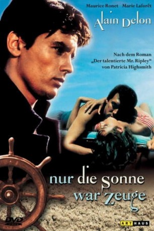
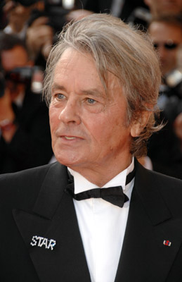
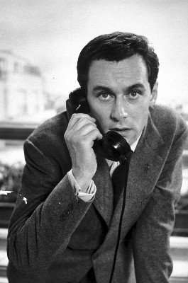
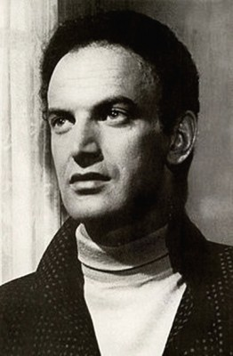
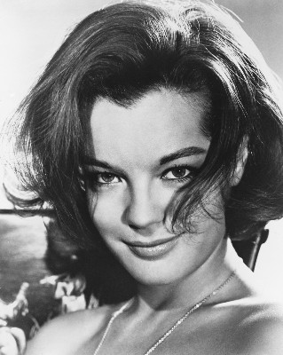
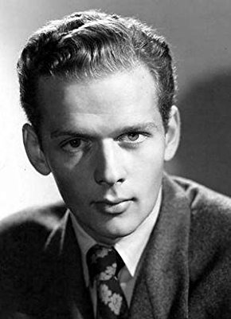
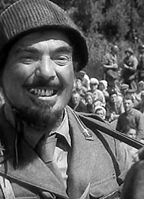

#4833 Nur die Sonne war Zeuge
Alternativ: Purple Noon (Englischer Titel)
 
 IMDB-Wertung: 7.8 / 10
IMDB-Wertung: 7.8 / 10  Metascore: 0
Metascore: 0 
Der amerikanische Milliardärssohn Richard Greenleaf genießt sein Leben lieber mit seiner Freundin Marge Duval in Italien, als sich zu Hause um die Geschäft zu kümmern. Sein Vater beauftragt daraufhin Tom Ripley, der behauptet, Richard vom College zu kennen, seine Spross in Italien zu finden und ihn zur Heimkehr zu bewegen. 5.000 Dollar hat er ihm dafür versprochen - aber als Ripley Richard gefunden hat, denkt er gar nicht an den Heimflug. Er möchte auch einmal das "Dolce Vita" genießen; und er hat mehr im Sinn... Weshalb sollt er sich mit 5.000 Dollar abspeisen lassen, wenn er wesentlich mehr haben kann? Dafür muss er allerdings einige Demütigungen des doch recht überheblichen Lebemanns über sich ergehen lassen.
Jahr: 1960
Dauer: 117 Minuten
FSK: 16
Land: Frankreich Studio: GloriaTonspuren:
Untertitel:
Auflösung: 1080p (1792x1080) Größe: 8611 MB
Genre: Krimi, Drama, Thriller
Regisseur: René Clément
Drehbuch: Ron Clements
Soundtrack:
Darsteller:
-  Alain Delon als Tom Ripley
-  Maurice Ronet als Philippe Greenleaf
- Marie Laforêt als Marge Duval
- René Clément als Le serveur maladroit , uncredited
-  Paul Muller als Blind Man , uncredited
-  Romy Schneider als Freddy's companion , uncredited
- Erno Crisa als Riccordi
-  Frank Latimore als O'Brien
- Billy Kearns als Freddy Miles
- Ave Ninchi als Signora Gianna
- Viviane Chantel als The Belgian lady
- Nerio Bernardi als Agency Director
- Barbel Fanger als
- Lily Romanelli als Housekeeper
- Nicolas Petrov als Boris
- Elvire Popesco als Mrs. Popova
- Jacqueline Decaë als Ingrid , uncredited
- Walter Grant als Bit , uncredited
-  Nino Vingelli als Bit , uncredited
Datei: X:\1960\Nur die Sonne war Zeuge (1960, FSK16, 1792x1080).mkv seit 23.11.2016
Festplatte: HD 1900-1970
 Es gibt insgesamt 21 Filme in der Gruppe '1960'
Es gibt insgesamt 21 Filme in der Gruppe '1960'